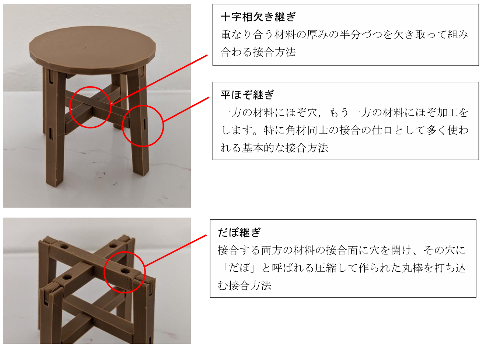
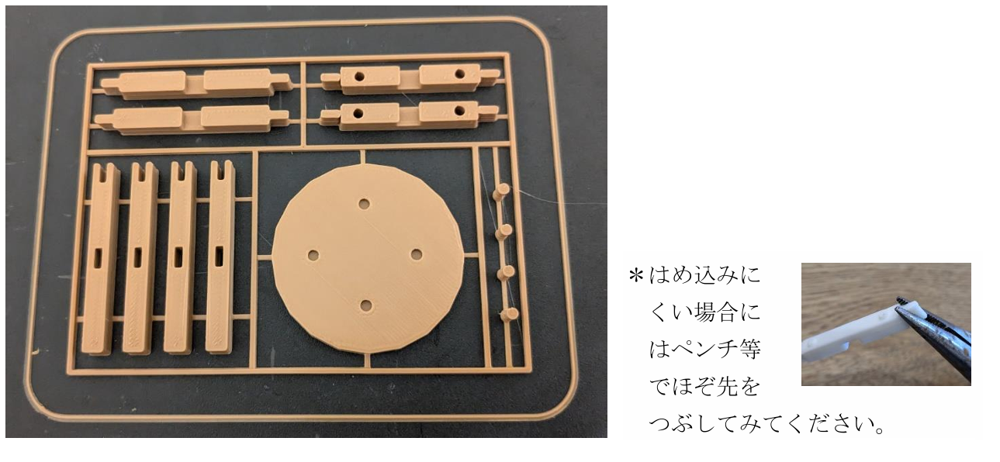
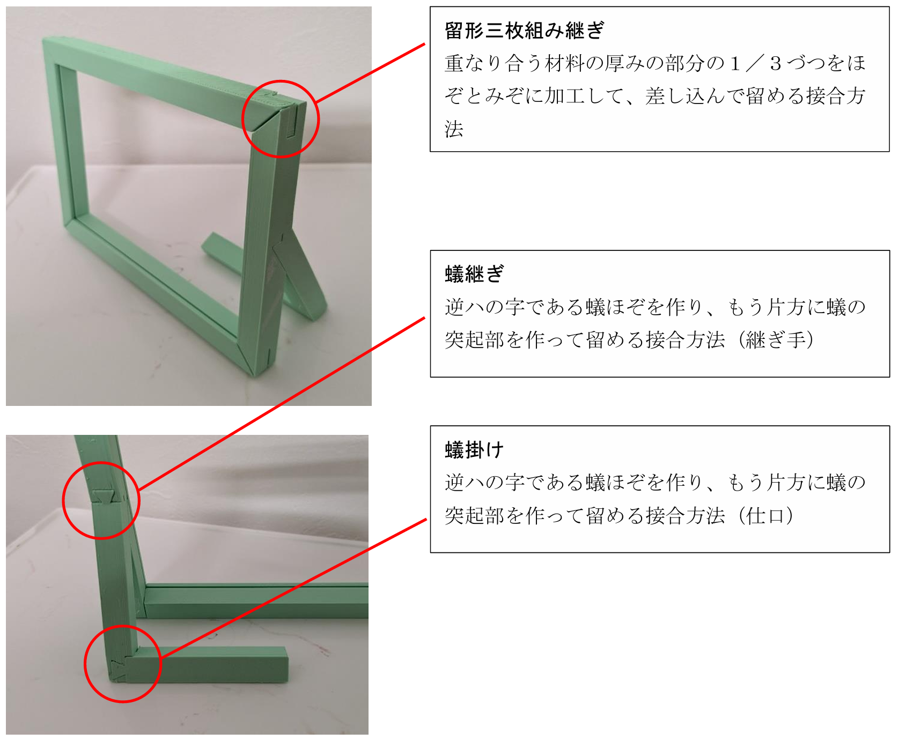
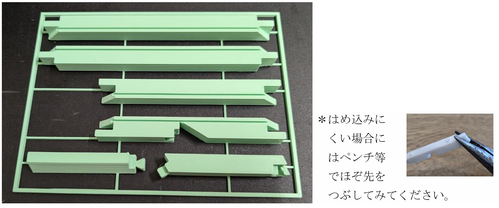

作品例
2つの作品で学ぶ6種類の継ぎ方
モデルをドラッグして回転させながら、それぞれの継ぎ手・仕口の位置を確認しましょう。
読み込み中…
作品① イス
ドラッグで回転 ／ スクロールで拡縮
作品例① イス
1
十字相欠き継ぎ
▼
重なり合う材料の厚みの半分ずつを欠き取って組み合わせる接合方法。脚の交差部分などに使われる。
2
平ほぞ継ぎ
▼
一方の材料にほぞ穴、もう一方にほぞ加工をして差し込む接合方法。角材同士の仕口として最も基本的な技法。
3
だぼ継ぎ
▼
接合面に穴を開け、「だぼ」と呼ばれる圧縮丸棒を打ち込む接合方法。外から見えないすっきりとした仕上がりになる。


読み込み中…
作品② フォトスタンド
ドラッグで回転 ／ スクロールで拡縮
作品例② フォトスタンド
1
留形三枚組み継ぎ
▼
重なり合う材料の厚みを1/3ずつほぞとみぞに加工して差し込んで留める接合方法。強度が高く美しい仕上がりになる。
2
蟻継ぎ
▼
逆ハの字（蟻型）のほぞを作り、もう片方に蟻の突起部を作って留める接合方法（継ぎ手）。引っ張り力に強い。
3
蟻掛け
▼
蟻継ぎと同じく逆ハの字の形を使うが、こちらは直角方向の接合（仕口）として使われる。棚や枠組みに多く見られる。


基礎知識
継ぎ手と仕口の違い
継ぎ手（つぎて）
材料を同じ方向に延長するときの接合方法。材料の長さが足りないときに使う。蟻継ぎなどが代表例。
仕口（しぐち）
材料を直角や斜めに組み合わせるときの接合方法。フレームや枠組みを作るときに使う。平ほぞ継ぎなどが代表例。
接合の選び方
どの方向から力がかかるか、見た目をどうしたいかによって使い分ける。強度・美観・加工のしやすさのバランスが大切。